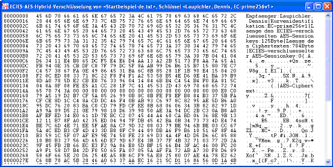

Dialog zur ECIES-Hybridverschlüsselung
Dieser Dialog bietet die Möglichkeit, die Verschlüsselung mit dem ECIES-Hybridverfahren durchzuführen.
ECIES ist eine Hybridverschlüsselung mittels ECDH- und AES-Verfahren. Das Hybridverfahren ist das am weitesten verbreitete Verfahren, Daten verschlüsselt zu übertragen. Weitere Informationen zur Hybridverschlüsselung finden sie im Skript.
Um ein Dokument mit ECIES zu verschlüsseln, ist es nötig, dass ein ECC-Schlüsselpaar vorliegt. Wenn Sie noch keinen asymmetrischen Schlüssel angelegt haben, müssen Sie das vor dem Aufruf des Dialogs ECIES-Hybridverschlüsselung tun:
Im Menü von CrypTool unter Schlüsselverwaltung \ Schlüssel erzeugen finden Sie entsprechende Werkzeuge. Damit können Sie sich Ihr ECC-Schlüsselpaar erzeugen und in die interne Datenbank von CrypTool abspeichern.
Nun kann ein Dokument in CrypTool geöffnet werden und über den Menüpunkt Ver-/Entschlüsseln \ Hybrid\ ECC-AES-Verschlüsselung wird der ECIES-Dialog für die Verschlüsselung gestartet.

Nach Auswahl des Schlüsselpaares wird durch einen Klick auf den Button Verschlüsseln das Dokument mit ECIES verschlüsselt. Optional kann man sich die zum Verschlüsseln benötigte Zeit durch die Markierung der Checkbox anzeigen lassen. Das verschlüsselte ECIES-Dokument wird nun in CrypTool angezeigt:
Der Inhalt dieses Fensters dient auch als Grundlage für die Hybridentschlüsselung, die den gesamten Verschlüsselungsvorgang rückgängig machen kann.